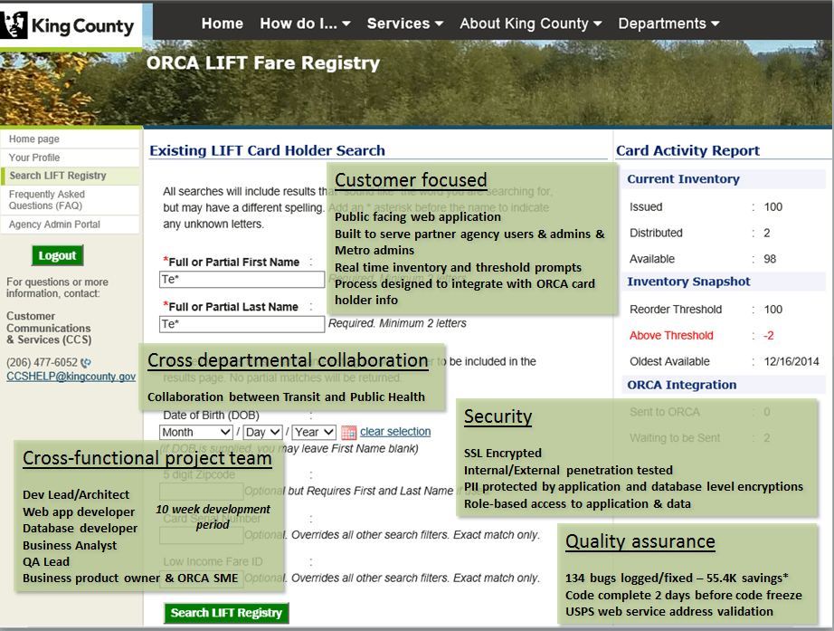

Top 10 IT Initiatives at King County
Actions we are taking to improve the lives of King County residents
Online collaboration with Unified Communication

We have 12,528 employees using Unified Communication tools. Per day, we send an average of 7,661 instant messages, meet online 576 times, have 72,962 peer to peer sessions, and spend 1,556 hours talking.
Learn moreOnline collaboration with Unified Communication
Communications are critical to all County agencies and departments, and we have an obligation to all residents to provide reliable communications for our services including mission critical services such as Public Health, Transit, Law Enforcement and Emergency Operations. King County decided to implement a countywide telephone system (Lync) to provide a unified approach to communications and to streamline operational management of the entire telephony environment. In addition we wanted to take advantage of the additional opportunities offered by a unified communications infrastructure. To this end we deployed a unified communications platform based on the Microsoft Lync Server to add business value and enhance the ability of the County to conduct business for and on behalf of its residents.
Based on new transport technology, Lync aligns telephony functions with other information technology components like Exchange and Office 365. This convergence produces new dynamics between IT systems, creating the ability to link computer functions like presence and audio conferencing with traditional voice calls. All departments are on a common core platform with similar voice devices, but with the ability to customize the systems to meet the individualized requirements of each department. In addition, the new system design greatly enhances business continuity by eliminating many single points-of-failure. The complete solution covers telephones, voice messaging, mobile device support, call queuing (ACD) systems, automated service tools (IVR), enhanced reporting for the business users and system management tools.
The objective of this work was to design, build, and deploy a Unified Communication platform in King County’s production environment using a reference architecture that provides high availability and site resiliency for core functionality. The solution provides a platform that can support up to 16,000 users per central site and can scale to 80,000 just by adding Front End servers. Each central site is limited to 8,000 users under normal operating conditions so that either central site can handle the full 16,000 users in the event of a site failover.
The success of this work is apparent in the high use of the unified communication features. Our Lync design provides a platform for multiple end-user unified communications experiences, including:
- Presence and instant messaging including multiparty
- Web conferencing
- Audio/video conferencing
- Enterprise Voice
- PC-to-PC communication


Employee Intranet Site

The new KCWeb includes an employee portal homepage, a central hub for the tools, news and resources – plus 15 new department, agency and division intranet sites.
King County is a diverse service provider, with multiple lines of business and products that are delivered to both internal and external customers. In order to effectively serve residents with quality services, King County employees and work groups must be working together as one organization. As part of our One King County initiative we created a robust internal intranet site for employees, on our SharePoint platform, that makes it easy for our employees to find the resources they need for their job, the tools they use every day and the news to help them stay informed – all in one central location. On the portal there is access to employee news and spotlights, featured jobs, an events calendar, Photo of the Week, and quick links to things like PeopleSoft payroll, training and Healthy Incentives. Employees can also use the How Do I, Work Tools and Employee Tools menus to access a wide range of County resources. They can access departments, agency or division sites (new or existing), “favorite” their frequently used intranet and SharePoint sites, and quickly look up colleagues with the People Finder.
Learn moreEmployee Intranet Site
Healthy Incentives

King County created Healthy IncentivesSM to stop its health care costs from increasing at unsustainable rates.
Through improved health of employees and use of higher quality health care, the county has reduced the rate of its health care trend from 12.2% to 4.3%, avoiding $46 million in costs. Engagement has been at or above 90% since the program began, thanks to technology options, like texting their activity to this online program. Participants have lost 19 tons more than a national comparison group and the smoking rate has dropped below the national average from 12% to 4.71%. Healthy IncentivesSM is a catalyst for improved employee health that curbs the use of costly health care. It also works to improve the quality of health care in the region through a region-wide collaborative, thus reducing ineffective and costly treatment. This successful program starts with an online wellness assessment to provide visibility into areas for potential improvement. Once an individual action plan is in place employees leverage the robust website with toolkits, online programs, and links to opportunities to engage in healthy activities.
Learn moreReduced transit fare for income-qualified riders

Now there's a more affordable way to get to work, school, shopping, day care or anywhere else you need to go. It's ORCA LIFT, a new, reduced transit fare that can help you get more out of your public transportation system.
Learn moreReduced transit fare for income-qualified riders
Public transit agencies around the world often provide fare discounts based on age - for example children and seniors. King County has recently gone one step further by implementing a transit fare system based on the level of household income. ORCA (which stands for One Regional Card For All) LIFT is our new reduced bus fare for lower-income riders, which went into effect March 1. With LIFT, there's a more affordable way to get to work, school, shopping, day care or anywhere else our residents need to go. Once someone qualifies for the ORCA LIFT program, they receive an ORCA LIFT card registered to their name, with the same features every ORCA card has. They can load a dollar value on their card to pay for trips one at a time, or load a discounted monthly pass that lets you take unlimited trips for an entire month. But what makes ORCA LIFT special is you have all the power and convenience of the ORCA card system at a fraction of the cost. Income-qualified riders can save up to 50 percent or more on Metro Transit buses, Kitsap Transit buses, Sound Transit Link light rail, King County Water Taxi, Seattle Streetcar.
The basic operation of the program can be described as a five-step process: Prepare and distribute the cards, verify eligibility, issue cards, update customer information in an online database, and update the ORCA system. King County residents who earn less than 200 percent of the federal poverty level ($23,340 for individuals or $47,700 for a family of four) are eligible for the new ORCA LIFT card. Riders with the discount ORCA card will pay a reduced fare of $1.50 on Metro buses, Sound Transit light rail, the
Seattle Streetcar, King County Water Taxi and Kitsap Transit buses, no matter if they are traveling within or outside of the Seattle city limits. The ORCA LIFT card is a valuable and a much needed resource that makes public transportation more affordable and accessible for those who need and rely on it the most. To qualify for the reduced fare, residents visit a location in the countywide system of more than 40 health clinics, food banks, community colleges and other sites run by nonprofit groups, which provide this service. There, they bring documents to verify their income, such as food-assistance cards, Medicaid or other health-benefit cards, a Temporary Assistance for Needy Families award letter, recent paycheck stubs, or federal tax returns. People who bring the required paper work are able receive the reduced fare card in a matter of minutes.
Implementing ORCA LIFT was a major change to the ORCA system. In addition, this required a public facing website with attached database that would capture customer information including PII and load the ORCA system. As with the LIFT program itself, the development of that database required collaboration from BA Service, BSS, and Tech Products.

King County Metro expects between 45,000 and 100,000 people to sign up once the program is completely up and running. The program is expected to be a huge benefit for low-income immigrant and refugee communities and others.
iRealProperty: Assessments on the iPad

Our Strategic Plan envisions a mobile workforce for the future. If overly office-bound, staff simply cannot get the work done. Our Department of Assessments needed an app that worked on a device that was light, bright, and seamlessly connected to the database. iRealProperty is an app that facilitates the department’s work in a collaborative, effective, and innovative way.
Learn moreiRealProperty: Assessments on the iPad
With the arrival of the Apple iPad, the world of mobile data devices was changing at warp speed. The field appraisers had long complained that the tablet PCs were heavy, slow, and hard to work with in the field because the screen was not very bright. In addition, they were carrying digital cameras, taking pictures in the field and then having to match them up back at the office.
The process had become cumbersome, inefficient, and technology-constrained. When the iPad 2 was introduced, it was clear there could be a new way of doing business.
It was lighter and brighter and had up to 10 hours of battery life on a single charge. It had a built-in camera and cellular connectivity so data could be synced easily and quickly while the user was still in the field.
But for an assessor or appraiser (instead of a fee appraiser), there was one big problem. There was no app for appraisal. The department looked around, talked to vendors who had built apps for the Federal Government, and talked to internationally known and respected technology companies. No one had an app that would do the trick.
The department had a solid, home-built application for the PC (www.kingcounty.gov/assessor.aspx). That application was originally designed by teams of appraisers (land, building, sales, and the like), all focused on capturing relevant data for accurate property valuation. The real strength of the PC application stemmed from that consensus process of so many experts. That PC version included excellent integration of geographic information system (GIS) and computer-assisted mass appraisal (CAMA) data, which contributed significantly to King County being the 2012 corecipient of the IAAO Distinguished Jurisdiction Award. But the appraisers needed that sophisticated functionality in a better, modern mobile device for work in the field. So, in partnership with a Seattle-area developer, Mobise Mobile Enterprise, the department built an iPad app,
iRealProperty. The team included IT Director Hoang Nguyen, Project Manager Don Saxby, and Mobise’s Regis Bridon. As the team started working on the proof of concept, it became clear that something more than just simple characteristic data was needed. The iPad could do that easilyenough, but with its cellular/Wi-Fi connectivity, global positioning system (GPS) capability, big, bright screen, and longer battery life, it could do much more. The first step was to send Regis out to the field with department appraisers. They spent a day in largely densely populated Seattle and its various neighborhoods, and then another day in more suburban and rural areas. It proved to be some of the most valuable time spent on the project. The field time gave the developer a much deeper understanding of how appraisers now work and how they could work with the iPad. The team recognized that mapping would be vital but had to figure out how to carry the graphic-intensive map files without constantly shuttling them back and forth over a cellular or Wi-Fi connection. And a wireless connection was another issue.
Even in a high-tech-friendly environment like King County, there were cellular holes in coverage by both AT&T and Verizon, both in rural areas and in some unexpected urban spots. Without connectivity, would the appraisers be left dead in their digital tracks? That wouldn’t work.
But in the mobile world of the twenty-first century workplace, connectivity becomes a critical concern. In the pre-iPad era, appraisers downloaded information to their tablet PCs, went to work in the field, and then returned to the office to upload the material to the department servers.
Connectivity was a “sometimes” kind of thing. However, to capture the full benefits of the iPad, there had to be a balance between the data that could be carried on the device and the data that could be synced in real time.Working with the Mobise team, department staff developed a way to sync the characteristic data (relatively small bits of data), while holding larger files, such a photos and drawings, until the iPad could “sniff” out a strong enough cellular signal or had Wi-Fi connectivity. That is, people could keep working in the field without either having the device hang while trying to transmit large files or risking the loss of data because it wasn’t initially held on the iPad.
Another important efficiency gain came from integrating the iPad 2’s camera into iRealProperty. In the past, appraisers would hit the field with their tablet PC in one hand and a digital camera in the other. Back in the office, they had to download the pictures and then carefully try to match each photo to each parcel. It’s a time-consuming, potentially error-plagued process that iRealProperty cured with a camera click. With the iPad’s built-in camera integrated into the
iRealProperty app, the photo is automatically matched with the parcel and geotagged; a time and date stamp on the photo proves that appraisers were there should there be a question in an appeal; see figure 1.Perhaps the most useful feature of iRealProperty is the use of maps through up-to-date GIS data; see figure 2. Because of the huge size of native ESRI maps and parcel layers, careful thought had to be given to how to handle those on the iPad. ESRI has a very good app for the iPad, and department staff looked at loading the entire county on the device. The files, however, were simply too large to easily sync in real time to the department’s database; it would slow performance in the field considerably.
Thus, GIS data were stored by assessment areas (King County is broken down into 92 areas) on the device. Given the infrequency of GIS data changes, it was a way to carry and utilize the richness of the GIS information without endless waiting for it to sync with the servers. By converting the files to another format, the overall size of the data carried on the iPad was reduced, while staff retained the ability to zoom in on an area to see where actual property lines fall and apply multiple GIS layers, such as erosion hazard, floodplains, wetlands, water mains, gas pipelines, street right-of-way and names.
In fact, it became clear the mapping capabilities of the iPad were both mission critical as well as a unique opportunity for more efficient use of GIS in the field. The search function (figure 3) of the data was tightly integrated to the mapping tools, so appraisers could highlight multiple parcels, touch the map icon, and have them displayed on a map.
In addition, by using the GPS capability of the iPad, appraisers can pinpoint where they are and see what properties are in need of inspection; see figure 4. Ironically, one problem discovered in staff testing was that it was so easy for users to move the map around on the iPad, they could get “lost.” Regis quickly solved that problem with a “centering” icon that instantly took users to back to where they started.
Naturally, one of the initial and fundamental questions was how could an Apple product work with a Microsoft database, as the field information is all stored in SQL format.
There were skeptics, but it turns out, however, that the iPad and SQL play very nicely together; see figure 5.Regis had once worked for Microsoft and had a solid understanding of both operating system worlds. As a result, users can seamlessly access property characteristics, history (including appeals, permits and sales), and the field appraiser’s notes. Even previous photos of the property and,
if in the database, floor plans, are available.
Taking notes was another initial point of skepticism among some staff. How would they take notes if they were standing at the door, talking to a taxpayer? A number of testers did not like the iPad’s virtual keyboard. They were used to a stylus, and the iPad didn’t come with one. The team tried to convince them that their index finger made a dandy, built-in stylus that would be very tough to lose in the field. Perhaps it was a nostalgic carryover from the days of paper and pencil, but they wanted something to take notes with and, to them, that was a stylus. They were given styluses, but Regis devised a few tricks for note-taking. After building the note function into the iRealProperty app and offering them the use of the stylus or virtual keyboard, Regis explored one more option, voice to text; see figure 6. Even with Regis’ French-accented English, it worked. Staff could simply dictate their notes into iRealProperty, and it would turn them into a text file in the note section of that parcel record. Presto! And no stylus required. The note-taking solution underscored the fundamental approach to the development of iRealProperty. The objective was to integrate the department’s work, the app, and the capability of the iPad as tightly as possible; field appraisers did not want to have to access several different apps for every parcel they inspected. By Washington State law, each of the some 670,000 parcels in the department’s jurisdiction can be physically inspected once every six years, plus maintenance, sales, and new construction. Hopping between apps would be time-consuming, cumbersome, and counterintuitive to the protocols of the iPad. What was needed was an app that, once opened, would allow the user to get the vast majority of work done without ever having to leave iRealProperty.
As the team proceeded through various builds of the app, functionality was added each step of the way. The ability to take measurements in the field was incorporated, along with a simple drawing program. Parcels can be bookmarked for checking later. The map can be rendered real-time with CAMA data to verify that property characteristics are coded consistently.
The status dashboard shows sales verifications, properties for physical inspection, maintenance, and maintenance details.
Developing iRealProperty is only part of the project, however. There were other key elements to figure out: security, IT support, and acceptable use. In addition, what accessories and additional apps would staff need to be truly mobile and productive in the field?
Security was a foremost concern. There was some initial skepticism that the iPad was “just a consumer device” and thus not very secure. That’s not the case. In
fact, one early reason for adopting the iPad over an Android tablet was reports of successful hacking, malware, and other attacks launched against the Android platform. In general, the iPad (combined with Apple’s iron gate approach to selling anything through the App Store) has been shielded from widespread, successful attacks.
That’s not enough, of course, when it comes to security. Several other steps were implemented to help secure the device and the data and provide safeguards in case of loss or theft. Users are required to use Apple’s four-digit pass lock to access the device. In the case of iRealProperty, they are also required to enter their King County enterprise system login and complex password, which is verified against Active Directory running on the department’s Exchange servers. In addition, data are encrypted as they shuttle wirelessly between the iPad and the servers.
To further safeguard the employee and the department in case of loss or theft, iRealProperty is being deployed through a Mobile Device Management (MDM) system.
These systems have several advantages. If the iPad is lost or stolen, IT can wipe the data, lock it, and render the device useless. While the data on the device are already available on the department’s Web site, the MDM system is a way to keep the data secure so a thief cannot tamper with the database. In addition, the MDM allows the department to deploy and update iRealProperty as well as make bulk purchases of other approved apps and push them to the device. It would have been a procurement nightmare to track more than 100 separate iTunes accounts. The MDM provides a single technical and financial gateway. Another issue has been whether a large IT staff of Appletrained technicians would be needed for maintenance. Not so far. I’ve been running my iPhone against the county Exchange servers for more than two and a half years, and during that time, I’ve required about six minutes of IT support—all of it being to set up the device and not a minute more. Compared to the Android platform (which is actually several varieties under one label), iOS (the mobile operating system for iPad, iPhone, and iPod Touch) has run flawlessly in concert with Exchange. And while Regis has trained IT staff members how to program and maintain iRealProperty, a surge in iPad-related issues is not anticipated.
For such on-site intensive work as setting property
values, the iPad with iRealProperty is the way to go. In terms of hardware costs alone, the department will save $250,000 off the top in comparison with similarly equipped tablet PCs
Each week, the department learns more about the iPad and how it is being used by staff members. It may not be a perfect solution, but it is a quantum move forward from the bulky, battery-draining tablet PCs previously being used.
The strategic plan envisions a mobile workforce for the future; if overly office-bound, staff simply cannot get the work done. What was needed was a device that was light, bright, and seamlessly connected to the database; that’s the iPad. Developed in partnership with Mobise and with invaluable early input from the staff test team, iReal- Property is an app that facilitates the department’s work in a collaborative, effective, and innovative way.
Development and implementation of iRealProperty consumed more hours of work than originally imagined, but anyone who has viewed the app testifies that the effort was worth it. Moreover, additional features and changes for iRealProperty 2.0 are already being discussed.
Cloud Backups Strategy

Our legacy tape based back-up architecture required 2.5 full time employees and used over 2000 tapes per year. The utility of cloud storage reduces costs by allowing us to eliminate tape backups and associated operational complexity, while giving a more robust backup solution.
Learn moreCloud Backups Strategy
Data Back-up means creating a copy of all records. In a busy county environment our data storage requirements were be significant – and rising. Organizing this storage space and managing the backup process can be a complicated undertaking. Our legacy data repository model was expensive and prone to error. We had 16 tape drives running 24x 7 and we could not keep up with the current demand. The process was very manual and error prone and backups did not finish within their windows. We also had multiple tape
infrastructure failures like tape jams, robot arm calibration, and drive failures. Across the county we have increased the amount of data we create and so back-up costs across the board continue to rise. We also identified risks with our less than 50 mile off-site requirement, and overall decided that a complete infrastructure and data-back up rearchitecture was needed. We identified end-to-end security for data at rest and in flight using certified encryption as a key requirement. We needed modernized processes for deduplication and compression, to reduce storage.
Our new back up strategy reduces complexity and leverages the cloud. We started with a proof-of-concept, addressed security and legal requirements, and took time to work through change management concerns with our staff and customers. We also opted to start slow and accelerate over time. The solutions we chose included data encryption in transit and at rest and meets the 50 mile archival requirement. During implementation, we went from zero back-up clients to 536 over a period of 4 months. Instead of expensive tape libraries with a huge footprint and expensive storage needs, we have a dashboard.
Cloud computing is gaining traction among public sector agencies looking to create a more efficient government with cost-effective storage and data management solutions. With a secure cloud solution, we can deploy a cloud infrastructure that accelerates new services and increases operational efficiency and flexibility while cutting costs.
We are happy to say King County is now using the cloud for storage and compute. The utility of cloud storage reduces costs by allowing us to eliminate tape backups and associated operational complexity, while giving a more robust backup solution.

Constituent Relationship Management System

The Health Information Technology Project team created a system that enables Public Health to advance improvements in individual and public health outcomes.
Learn moreConstituent Relationship Management System
Customer or constituent relationship management (CRM) is a system for managing interactions with customers that uses technology to organize, automate, and synchronize records.
In King County, we had a few stand-alone CRM solutions that grew old and needed to be updated. Instead of re-implementing single solutions, we determined that an enterprise-wide CRM tool would increase customer service and collaboration countywide. We decided on a unified CRM cloud platform to help us deliver One King County service and looked to this to support to the goal of Service Excellence as defined by the adopted King County Strategic Plan.
Our vision for this service hinged on the unified management of constituent interactions. ‘No wrong door’ service means questions can be received, assigned, and assured of completion in the CRM system. This gives us the ability to: track issues, monitor, and report on progress as well as track trends by issue type, agency, resident, and neighborhood. CRM benefits and improves efficiency for all departments in their efforts to serve the public because we can set up a flexible and customized, yet consistent CRM solution for any department activities. And in some cases, the departments can leverage benefits of cross-collaboration. An example of this is our new Public Records Request (PRR) App.
In 2012 we had multiple requests for similar applications, and decided to be efficient and include all requirements in a single system.
Two agencies were each independently quoted a price of $40,000 to purchase a “canned” CRM solution for their Public Records Request business requirements. Other departments we interested, since managing public records and requests is a challenging and time-intensive activity with legal requirements on responses. If we had purchased 9 independent solutions to support the initial users of the PRR solution following this model, that would mean a $360,000 purchase price. Instead, we implemented a single PRR app for about $100,000. In January of 2015, the PRR app rolled out to all Public Records Officers and saved the county approx. $260,000.
When dealing with public data, security is critical. Our CRM solution provides a security model that protects data integrity and privacy, and supports efficient collaboration.
- Role-based security: groups a set of privileges together that describe the responsibilities that can be performed by a user.
- Record-based security: access rights to specific records
- Field-level security: restricts access to specific high business impact fields in an entity only to specified users or teams.
Our new enterprise CRM service support our need for a unified constituent request tracking and management process.
The results of our CRM deployment enterprise-wide include:
- Improved customer service, regardless of what part of the County they initially contact;
- Streamlined the County's processes for handling constituent issues and concerns with free flowing information within and across organization and ability to view information that truly reflects the current state of our services;
- Secured data with end user set permissions for access and/or use of unique data; and
- Advanced data collection and analytics to allow King County to be more pro-active on emerging issues and topics
Electronic Health Record and Patient Management System

The Health Information Technology Project team created a system that enables Public Health to advance improvements in individual and public health outcomes.
Learn moreElectronic Health Record and Patient Management System
The Affordable Care Act emphasizes utilization of a Certified Electronic Health Record for all people in the U.S. These technologies help reduce medical errors, facilitate continuity of care, better meet the needs of diverse populations, and improve quality and efficiency of care. Under federal rules, medical providers without an electronic health record system by 2015 will incur financial penalties through decreasing reimbursements.
In 2012 our legacy practice management system used for patient registration, scheduling, and billing was losing vendor support so we knew we needed to replace it with a robust system that met all of our needs, while assuring patient safety and improving the community's health. We knew we needed to develop and maintain state of the art tools and systems to protect the public’s health, promote healthy communities and provide reliable, high quality public health services. In addition we knew we must adhere to sound operational practices and systems including assuring the transparency, cost effectiveness, and accountability of its activities, services and outcomes. Another requirement was to raise capabilities to match modern public health practice needs with the organizational attribute domains of workforce quality, obtain information for decision making, basic systems and infrastructure.
In order to provide the ability to rapidly and accurately assess key infections and environmental health threats and response efforts through selected enhancements in: (1) Collection and analysis of electronically transmitted data (2) Methods for measuring the health of vulnerable populations (3) Capability to monitor the health care delivery system.
Our new electronic health record and practice management system improves the capability of Public Health Seattle & King County to fulfill its functions through selective enhancement of key system elements including, modernizing key business tools, process and administrative systems to improve business efficiency while leveraging a cloud-based hosted SaaS solution. By mid-May 2015, 24 health clinics will have adopted this technology which puts us at a 70% completion rate. Our next phase includes Jail Health services, followed by the TB clinic, then our dental care facilities.
Puget Sound Trip Planner

Plan your transit trip, find your best stops, and see your next departures no matter where you are in the Puget Sound region, or where you want to go. The Puget Sound Trip Planner app does it all and more.
Learn more
Expanding outreach with social media and GovDelivery
With 150 social media pages, 500 email and text topics, and more than 500,000 fans, followers, and subscribers, King County’s digital communications are helping us do old things in new ways.
Our program focuses on four key areas: near real-time customer service, targeted communications and media relations, educating the public about our services, and taking a smart, data-informed approach to social media analytics.
Learn more